3.1. Generalized Linear Models¶
The following are a set of methods intended for regression in which the target value is expected to be a linear combination of the input variables. In mathematical notion, if 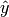 is the predicted value.
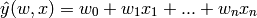
Across the module, we designate the vector 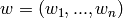 as coef_ and 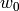 as intercept_.
To perform classification with generalized linear models, see Logisitic regression.
3.1.1. Ordinary Least Squares¶
LinearRegression fits a linear model with coefficients 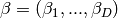 to minimize the residual sum of squares between the observed responses in the dataset, and the responses predicted by the linear approximation.
LinearRegression will take in its fit method arrays X, y and will store the coefficients 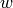 of the linear model in its coef_ member:
>>> from sklearn import linear_model
>>> clf = linear_model.LinearRegression()
>>> clf.fit ([[0, 0], [1, 1], [2, 2]], [0, 1, 2])
LinearRegression(fit_intercept=True, normalize=False, overwrite_X=False)
>>> clf.coef_
array([ 0.5, 0.5])
However, coefficient estimates for Ordinary Least Squares rely on the independence of the model terms. When terms are correlated and the columns of the design matrix 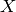 have an approximate linear dependence, the matrix 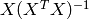 becomes close to singular and as a result, the least-squares estimate becomes highly sensitive to random errors in the observed response, producing a large variance. This situation of multicollinearity can arise, for example, when data are collected without an experimental design.
Examples:
3.1.1.1. Ordinary Least Squares Complexity¶
This method computes the least squares solution using a singular value decomposition of X. If X is a matrix of size (n, p ) this method has a cost of 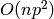, assuming that 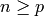.
3.1.2. Ridge Regression¶
Ridge regression addresses some of the problems of Ordinary Least Squares by imposing a penalty on the size of coefficients. The ridge coefficients minimize a penalized residual sum of squares,
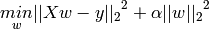
Here, 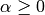 is a complexity parameter that controls the amount
of shrinkage: the larger the value of  , the greater the amount
of shrinkage and thus the coefficients become more robust to collinearity.
, the greater the amount
of shrinkage and thus the coefficients become more robust to collinearity.
As with other linear models, Ridge will take in its fit method arrays X, y and will store the coefficients of the linear model in its coef_ member:
>>> from sklearn import linear_model
>>> clf = linear_model.Ridge (alpha = .5)
>>> clf.fit ([[0, 0], [0, 0], [1, 1]], [0, .1, 1])
Ridge(alpha=0.5, fit_intercept=True, normalize=False, overwrite_X=False,
tol=0.001)
>>> clf.coef_
array([ 0.34545455, 0.34545455])
>>> clf.intercept_
0.13636...
3.1.2.1. Ridge Complexity¶
This method has the same order of complexity than an Ordinary Least Squares.
3.1.2.2. Setting alpha: generalized Cross-Validation¶
RidgeCV implements ridge regression with built-in cross-validation of the alpha parameter. The object works in the same way as GridSearchCV except that it defaults to Generalized Cross-Validation (GCV), an efficient form of leave-one-out cross-validation:
>>> from sklearn import linear_model
>>> clf = linear_model.RidgeCV(alphas=[0.1, 1.0, 10.0])
>>> clf.fit([[0, 0], [0, 0], [1, 1]], [0, .1, 1])
RidgeCV(alphas=[0.1, 1.0, 10.0], cv=None, fit_intercept=True, loss_func=None,
normalize=False, score_func=None)
>>> clf.best_alpha
0.1
References
- “Notes on Regularized Least Squares”, Rifkin & Lippert (technical report, course slides).
3.1.3. Lasso¶
The Lasso is a linear model that estimates sparse coefficients. It is useful in some contexts due to its tendency to prefer solutions with fewer parameter values, effectively reducing the number of variables upon which the given solution is dependent. For this reason, the Lasso and its variants are fundamental to the field of compressed sensing.
Mathematically, it consists of a linear model trained with L1 prior as regularizer. The objective function to minimize is:
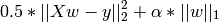
The lasso estimate thus solves the minimization of the
least-squares penalty with  added, where
is a constant and 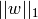 is the L1-norm of the
parameter vector.
added, where
is a constant and 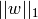 is the L1-norm of the
parameter vector.
The implementation in the class Lasso uses coordinate descent as the algorithm to fit the coefficients. See Least Angle Regression for another implementation:
>>> clf = linear_model.Lasso(alpha = 0.1)
>>> clf.fit([[0, 0], [1, 1]], [0, 1])
Lasso(alpha=0.1, fit_intercept=True, max_iter=1000, normalize=False,
overwrite_X=False, precompute='auto', tol=0.0001)
>>> clf.predict([[1, 1]])
array([ 0.8])
Also useful for lower-level tasks is the function lasso_path that computes the coefficients along the full path of possible values.
Examples:
3.1.3.1. Setting alpha¶
The alpha parameter control the degree of sparsity of the coefficients estimated.
3.1.3.1.1. Using cross-validation¶
The scikit exposes objects that set the Lasso alpha parameter by cross-validation: LassoCV and LassoLarsCV. LassoLarsCV is based on the Least Angle Regression algorithm explained below.
For high-dimensional datasets with many collinear regressors, LassoCV is most often preferrable. How, LassoLarsCV has the advantage of exploring more relevant values of alpha parameter, and if the number of samples is very small compared to the number of observations, it is often faster than LassoCV.
3.1.3.1.2. Information-criteria based model selection¶
Alternatively, the estimator LassoLarsIC proposes to use the Akaike information criterion (AIC) and the Bayes Information criterion (BIC). It is a computationally cheaper alternative to find the optimal value of alpha as the regularization path is computed only once instead of k+1 times when using k-fold cross-validation. However, such criteria needs a proper estimation of the degrees of freedom of the solution, are derived for large samples (asymptotic results) and assume the model is correct, i.e. that the data are actually generated by this model. They also tend to break when the problem is badly conditioned (more features than samples).
3.1.4. Elastic Net¶
ElasticNet is a linear model trained with L1 and L2 prior as regularizer.
The objective function to minimize is in this case
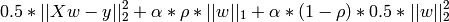
3.1.5. Least Angle Regression¶
Least-angle regression (LARS) is a regression algorithm for high-dimensional data, developed by Bradley Efron, Trevor Hastie, Iain Johnstone and Robert Tibshirani.
The advantages of LARS are:
- It is numerically efficient in contexts where p >> n (i.e., when the number of dimensions is significantly greater than the number of points)
- It is computationally just as fast as forward selection and has the same order of complexity as an ordinary least squares.
- It produces a full piecewise linear solution path, which is useful in cross-validation or similar attempts to tune the model.
- If two variables are almost equally correlated with the response, then their coefficients should increase at approximately the same rate. The algorithm thus behaves as intuition would expect, and also is more stable.
- It is easily modified to produce solutions for other estimators, like the Lasso.
The disadvantages of the LARS method include:
- Because LARS is based upon an iterative refitting of the residuals, it would appear to be especially sensitive to the effects of noise. This problem is discussed in detail by Weisberg in the discussion section of the Efron et al. (2004) Annals of Statistics article.
The LARS model can be used using estimator Lars, or its low-level implementation lars_path.
3.1.6. LARS Lasso¶
LassoLars is a lasso model implemented using the LARS algorithm, and unlike the implementation based on coordinate_descent, this yields the exact solution, which is piecewise linear as a function of the norm of its coefficients.
>>> from sklearn import linear_model
>>> clf = linear_model.LassoLars(alpha=.1)
>>> clf.fit ([[0, 0], [1, 1]], [0, 1])
LassoLars(alpha=0.1, eps=..., fit_intercept=True,
max_iter=500, normalize=True, overwrite_X=False, precompute='auto',
verbose=False)
>>> clf.coef_
array([ 0.717157..., 0. ])
Examples:
The Lars algorithm provides the full path of the coefficients along the regularization parameter almost for free, thus a common operation consist of retrieving the path with function lars_path
3.1.6.1. Mathematical formulation¶
The algorithm is similar to forward stepwise regression, but instead of including variables at each step, the estimated parameters are increased in a direction equiangular to each one’s correlations with the residual.
Instead of giving a vector result, the LARS solution consists of a curve denoting the solution for each value of the L1 norm of the parameter vector. The full coeffients path is stored in the array coef_path_, which has size (n_features, max_features+1). The first column is always zero.
References:
- Original Algorithm is detailed in the paper Least Angle Regression by Hastie et al.
3.1.7. Orthogonal Matching Pursuit (OMP)¶
OrthogonalMatchingPursuit and orthogonal_mp implements the OMP algorithm for approximating the fit of a linear model with constraints imposed on the number of non-zero coefficients (ie. the L 0 pseudo-norm).
Being a forward feature selection method like Least Angle Regression, orthogonal matching pursuit can approximate the optimum solution vector with a fixed number of non-zero elements:
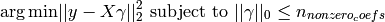
Alternatively, orthogonal matching pursuit can target a specific error instead of a specific number of non-zero coefficients. This can be expressed as:
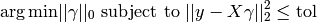
OMP is based on a greedy algorithm that includes at each step the atom most highly correlated with the current residual. It is similar to the simpler matching pursuit (MP) method, but better in that at each iteration, the residual is recomputed using an orthogonal projection on the space of the previously chosen dictionary elements.
Examples:
References:
3.1.8. Bayesian Regression¶
Bayesian regression techniques can be used to include regularization parameters in the estimation procedure: the regularization parameter is not set in a hard sens but tuned to the data at hand.
This can be done by introducing some prior knowledge over the parameters. For example, penalization by weighted 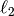 norm is equivalent to setting Gaussian priors on the weights.
The advantages of Bayesian Regression are:
- It adapts to the data at hand.
- It can be used to include regularization parameters in the estimation procedure.
The disadvantages of Bayesian Regression include:
- Inference of the model can be time consuming.
3.1.8.1. Bayesian Ridge Regression¶
BayesianRidge tries to avoid the overfit issue of Ordinary Least Squares, by adding the following prior on 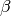:
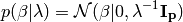
The resulting model is called Bayesian Ridge Regression, it is
similar to the classical Ridge. 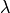 is an
hyper-parameter and the prior over performs a
shrinkage or regularization, by constraining the values of the weights
to be small. Indeed, with a large value of , the
Gaussian is narrowed around 0 which does not allow large values of
, and with low value of , the Gaussian is
very flattened which allows values of . Here, we use a
non-informative prior for .
The parameters are estimated by maximizing the marginal log likelihood.
There is also a Gamma prior for and :
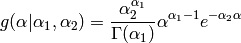
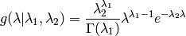
- By default
 , i.e.
, i.e. - very slightly informative priors.
Bayesian Ridge Regression is used for regression:
>>> from sklearn import linear_model
>>> X = [[0., 0.], [1., 1.], [2., 2.], [3., 3.]]
>>> Y = [0., 1., 2., 3.]
>>> clf = linear_model.BayesianRidge()
>>> clf.fit (X, Y)
BayesianRidge(alpha_1=1e-06, alpha_2=1e-06, compute_score=False,
fit_intercept=True, lambda_1=1e-06, lambda_2=1e-06, n_iter=300,
normalize=False, overwrite_X=False, tol=0.001, verbose=False)
After being fitted, the model can then be used to predict new values:
>>> clf.predict ([[1, 0.]])
array([ 0.50000013])
The weights of the model can be access:
>>> clf.coef_
array([ 0.49999993, 0.49999993])
Due to the Bayesian framework, the weights found are slightly different to the ones found by Ordinary Least Squares. However, Bayesian Ridge Regression is more robust to ill-posed problem.
Examples:
References
- More details can be found in the article Bayesian Interpolation by MacKay, David J. C.
3.1.9. Automatic Relevance Determination - ARD¶
ARDRegression adds a more sophisticated prior , where we assume that each weight 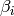 is drawn in a Gaussian distribution, centered on zero and with a precision 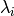:
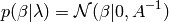
with 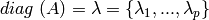.
There is also a Gamma prior for and :
- By default 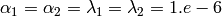, i.e.
- very slightly informative priors.
3.1.9.1. Mathematical formulation¶
A prior is introduced as a distribution 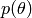 over the parameters. This distribution is set before processing the data. The parameters of a prior distribution are called hyper-parameters. This description is based on the Bayes theorem :
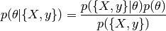
- With :
- 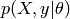 the likelihood : it expresses how probable it is to observe 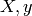 given 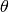.
- 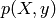 the marginal probability of the data : it can be considered as a normalizing constant, and is computed by integrating with respect to .
- the prior over the parameters : it expresses the knowledge that we can have about before processing the data.
- 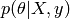 the conditional probability (or posterior probability) : it expresses the uncertainty in after observing the data.
All the following regressions are based on the following Gaussian assumption:

where is the precision of the noise.
References
- Original Algorithm is detailed in the book Bayesian learning for neural networks by Radford M. Neal
3.1.10. Logisitic regression¶
If the task at hand is to do choose which class a sample belongs to given a finite (hopefuly small) set of choices, the learning problem is a classification, rather than regression. Linear models can be used for such a decision, but it is best to use what is called a logistic regression, that doesn’t try to minimize the sum of square residuals, as in regression, but rather a “hit or miss” cost.
The LogisticRegression class can be used to do L1 or L2 penalized logistic regression. L1 penalization yields sparse predicting weights. For L1 penalization sklearn.svm.l1_min_c allows to calculate the lower bound for C in order to get a non “null” (all feature weights to zero) model.
Examples:
- example_logistic_l1_l2_coef.py
- Path with L1- Logistic Regression
3.1.11. Stochastic Gradient Descent - SGD¶
Stochastic gradient descent is a simple yet very efficient approach to fit linear models. It is particulary useful when the number of samples (and the number of features) is very large.
The classes SGDClassifier and SGDRegressor provide functionality to fit linear models for classification and regression using different (convex) loss functions and different penalties.
References